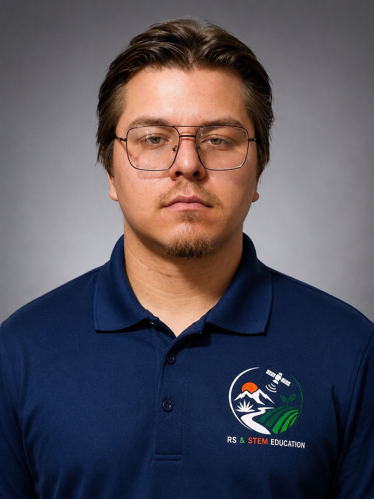
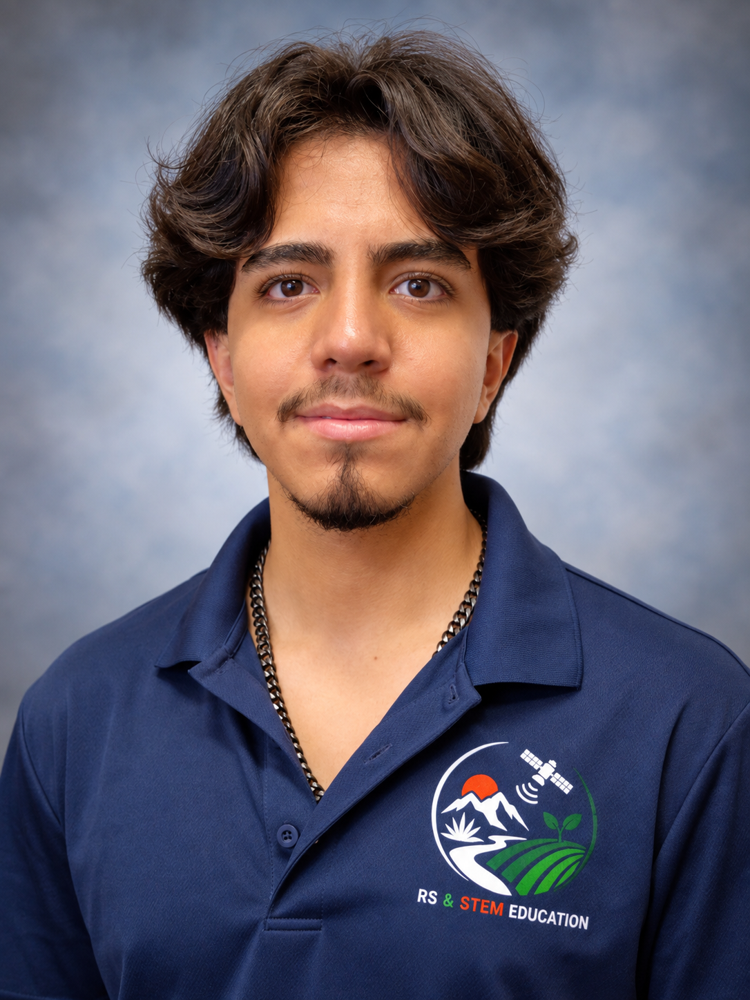

Hector Erives-Contreras
Faculty Investigator
The University of Texas at El Paso
Faculty member contributing to project coordination, expertise in remote sensing, data analysis, image processing and STEM education.
The RS & STEM Education project brings together faculty and students from UTEP and UACH with expertise and interests in remote sensing, engineering, agricultural applications, image processing, and STEM education.
Faculty Investigator
The University of Texas at El Paso
Faculty member contributing to project coordination, expertise in remote sensing, data analysis, image processing and STEM education.

Faculty Investigator
Universidad Autónoma de Chihuahua
Faculty collaborator supporting agricultural remote sensing, expertise in sustainable agriculture, soil fertility, and STEM education.

Undergraduate Researcher
The University of Texas at El Paso
Participates in identification and processing of satellite imagery, as well as image analysis, Python programming, and field measurements.

Graduate Researcher
Universidad Autónoma de Chihuahua
Participates in agricultural field activites, hyperspectral image acquisition and processing, and development of educational activities.

Undergraduate Researcher
Universidad Autonoma de Chihuahua
Supports UAV image aquisition and equipment set up, documents field data-collection activities, and records field measurements.

Undergraduate Researcher
The University of Texas at El Paso
Develops RS classification algorithms, supports satellite image downloading and classification, and helps with UAV image acquisition.

Farm Owner
SunGro
Participates as an agricultural advisor, provides access to the study fields and knowledge of field conditions and agirculture practices.
Faculty and students work together on satellite and UAV data analysis, field-based measurements, agricultural field mapping, image processing, algorithm development, and implementation of educational materials.